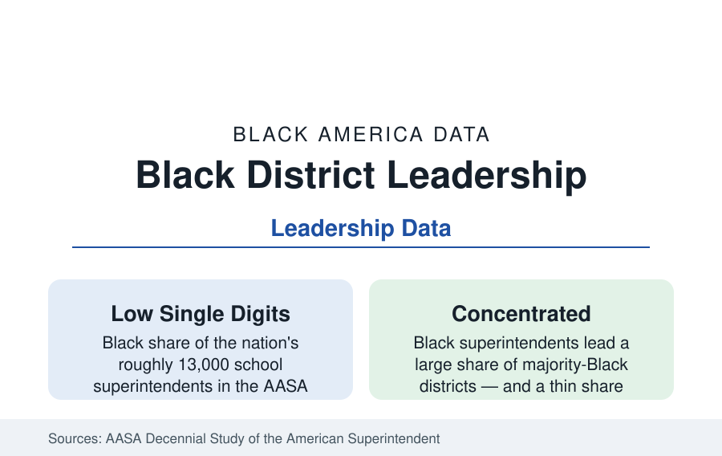

Black Education
Black Superintendents and School Boards: Leading Systems They Rarely Head
Black educators lead a small share of America's school districts — concentrated in the majority-Black systems of the South and the big cities. The leadership data.

About 13,000 superintendents run America's public school districts, and Black educators hold a small single-digit share of those offices in the AASA's decennial studies — this despite Black teachers forming a larger, if still thin, share of the workforce and Black students forming fifteen percent of enrollment. The leadership data complete the education section's pyramid: from the classroom of the teachers profile through the principal's office to the superintendent's chair, the Black share thins at every step. This article reports the summit's numbers.
The Distribution: Where Black Superintendents Lead
The map of Black superintendency is the map of Black enrollment, squared. The Southern states with majority-Black districts — the Mississippi Delta systems, the Black Belt counties, South Carolina's corridor, Louisiana's parishes — post the largest counts of Black superintendents, many leading the high-poverty rural systems of those profiles; the big-city systems (where Black superintendents have led a substantial share of the largest districts across recent decades — Atlanta, Detroit, Baltimore, DC, New Orleans, Memphis, Birmingham, Jackson among them at various points) form the visible tier; and the suburban and exurban systems — where the majority of American students now attend — record the thinnest representation, with many states' suburban superintendent corps counting Black leaders in single digits total. The HBCU pipeline supplies the corps disproportionately: the education doctorates of the graduate profile from the Southern and A&T's and Jackson State's leadership programs feed the Delta and Black Belt systems in a closed regional circuit.
Tenure, Boards, and the Politics of the Chair
The superintendency's professional data stratify by the chair's politics. Superintendent tenure nationally runs short (medians in the range of three to six years by system size in the AASA data), and the urban superintendency shorter; the research on Black superintendents' tenure adds the board-relations variable — elected boards in majority-Black systems are themselves substantially Black-led (the school-board composition data track enrollment more closely than the superintendency does), while appointed and majority-white boards' hiring patterns produce the suburban map above. The search-firm process (a handful of national firms run most big searches, their candidate slates a data file of their own) and the 'ready-now' pool definition (sitting superintendents and deputies in comparable systems) reproduce the distribution mechanically. The recent era's churn — the pandemic superintendency's record turnover — registered in the hiring data as both disruption and opening, with several of the largest systems' successions tracked in the trade press as the leadership file's live story.
The Money and the Contract Data
Superintendent compensation is public record and therefore unusually complete data: salaries scale with district size (the largest systems paying in the 300,000s and above), and the equity analyses of the contract data — by race and gender, controlling for district characteristics — find the familiar pattern in muted form: gaps at the margins, the buyout and severance asymmetries of the contentious exits, and the benefits structures that decide total value. The women-superintendents research (Black women forming a growing share of Black superintendents and of urban leadership) documents the intersection's specifics: Black women's superintendency concentrated in the same majority-Black systems, their tenure and board data tracked in a literature of its own.
The Principal Pipeline Beneath
The feeder office explains the summit: principals are the superintendency's pool, and Black principals hold roughly a tenth to an eighth of principalships in the NCES data — above the superintendent share, concentrated by the same enrollment map (majority-Black schools have Black principals at high rates; the suburban principal corps thins). The assistant-principal and central-office tiers stratify between them. The leadership academies and the HBCU and urban-university EdD programs that consciously build the pipeline publish their placement data as the file's forward indicator — the superintendent map of 2040 is legible in today's principal counts, and the principal counts say the suburban map changes slowly.
Reading the Leadership Data
The superintendent's office is where education's stated values meet its hiring data, and the numbers are the section's most legible: fifteen percent of the students, seven of the teachers, eleven of the principals, and a small single digit at the top. Black leadership in American education is real, storied, and geographically confined to the systems Black children built it in — the rest of the map is the data's standing question.
More in Black Education
Black Educational Attainment: High School Parity, the College Gap
About 89 percent of Black adults hold a high school diploma and one in four holds a bachelor's degree or higher — the attainment ladder, the college completion gap, and the generational trend.
Historically Black Colleges and Universities: Enrollment and Degrees
More than 100 HBCUs enroll roughly 290,000 students and award about one in six Black bachelor's degrees — an outsized share from a small sector. The federal education data.
Black College Enrollment: 2.4 Million Students
About 2.4 million Black students are enrolled in American colleges — nearly two-thirds of them women. The NCES enrollment data by sector, level, and trend.
Source: AASA, The School Superintendents Association decennial study; National School Boards Association; state education agency leadership data; ILO Group women superintendent research.